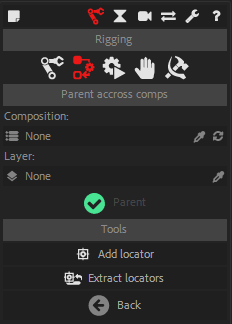
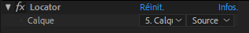

Parent Accross Compositions
Parenting
Sometimes, you may need to parent a layer to another one which is inside a precomposition, or on the contrary you may need to parent a layer to another one outside of the current composition, in a parent composition.
Duik Bassel makes this easy with the Parent across compositions tool.
This is the tool, in Standard Mode:

- Select the layers to parent (the children), as you would with standard parenting in After Effects.
- In the panel of Duik, select the composition containing the layer which you want to be the parent. In the list, only containing and precompositions of the current composition will be displayed. It is not possible to parent across compositions which have no direct relationship.
- Select the layer you want to be the parent.
- Click the Parent button. Duik will create a Locator in the composition of the parent and another one in the current composition and use them to do the parenting. (Duik will try to use master properties by default instead of expressions if the version of After Effects is higher than 17.0. You can change this in Expert or God mode in the options for locator extraction, read the next section for more details.)
Hint
When you parent to a layer inside a precomposition, if you precompose again the precomposition layer, the children layers may move. There is a simple way to prevent this:
1. Create a null layer.
2. Set its transformations to be exactly the same as those of the precomposition layer - including the anchor point. You can copy and paste them to do it quickly.
3. Parent all locators to this new null layer instead of the precomposition layer.
4. Now you can precompose the precomposition :)
Un-Parenting
To un-parent a layer which has been parented across compositions:
- Un-Parent the child layer (in After Effects, set its parent to None).
Then, only if there is not another child to the same parent:
- Look for the parent locator in the same composition, and remove it.
- Look for the parent locator in the parent compositions, and remove it.
Locators (Expert and God mode only)


Locators, which are used by the Parent accross compositions tool, can be very useful in some cases. They are null layers which follow another layer no matter what and get all its transformations.
You can add a locator in a composition at any time, and the Extract locators button will extract all locators from a selected precomposition layer to make them available directly inside the main (parent) composition. This is exactly the principle behind the Parent across compositions tool.
When extracting locators, you have the option to use either expressions or Master Properties. This option will also be used when parenting a layer accross compositions, if the child layer is in a precomposition (and not a “parent” composition).
Note
Duik will set the extraction to use Master Properties by default if the version of After Effects is higher than 17.0.
Warning
Do not modify the expressions / add keyframes on the transform properties of the locators, as this may break some other Duik tools. If you need to rig locators, just insert another null layer in the hirerachy: as a child of the locator, and parent the initial children of the locator to this new null layer.